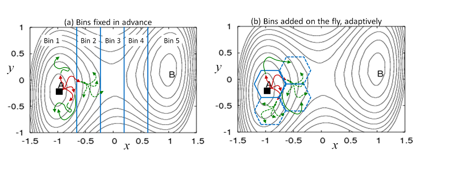
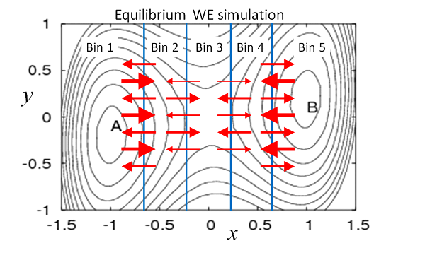
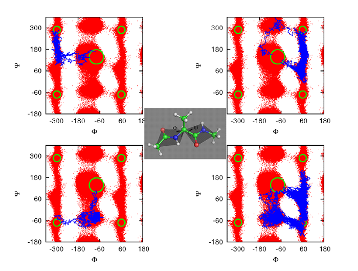
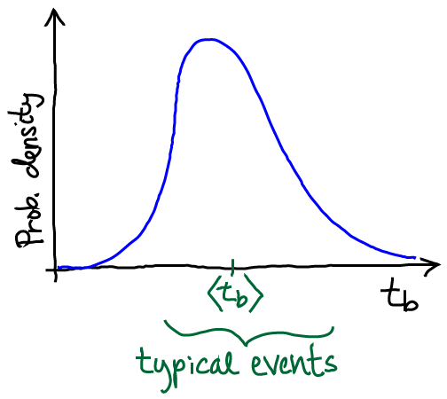

Overview of Weighted Ensemble Simulation:
Path-sampling, Steady States, Equilibrium
by Daniel M. Zuckerman, Oregon Health & Science University
Download pdf version here.
Introduction to Weighted Ensemble Simulation: The very basics
"Weighted ensemble" (WE) simulation is an enhanced sampling method for non-equilibrium and equilibrium processes which would be impractical to observe using standard dynamics simulation. Key examples at the molecular scale include (i) rare conformational processes, such as conformational transitions, (un)folding, and ion or substrate permeation through a complex (ii) activated processes generally - i.e., overcoming energy barriers and (ii) binding processes - i.e., rare complexation events. However, WE is a generic algorithm and can be applied to problems at the multi-protein scale [Spirit-2015] or network/cell scales [Donovan-2013, Donovan-2016]. The basic goal of such studies is to get from a known initial state (A in Fig. 1) to a target state B, learning pathways and rate constants for the process. WE uses a multiple-trajectory strategy in which individual trajectories can spawn multiple child trajectories upon reaching new regions of configuration space called bins. The children are suitably weighted to ensure statistical rigor. WE simulation can yield unbiased estimates for timescales/processes that are much longer than the simulations themselves.
The WE approach has numerous strengths:
- Statistically rigorous: WE can directly yield multiple, continuous pathways and rate constants for individual steps as well as the overall process in a single non-equilibrium simulation.
- Equilibrium: WE can be run in equilibrium mode -- states do not need to be defined in advance
- Highly scalable software: The freely available WESTPA software enables simulations of complex processes such as conformational changes, folding, and binding of molecular systems.
- Scale-agnostic: WE is applicable beyond the molecular scale - to networks, cells, viruses, etc.
- Interoperability: Sampling at fixed time points enables WE software to be inter-operable with any dynamics engine.
 Figure 1. Weighted ensemble (WE) simulation using bins defined in advance or on the fly. Multiple trajectories are initiated from any known configuration (filled square) and run using standard dynamics simulation, without bias. Each of the four initial trajectories is assigned a weight of 1/4. (a) When a trajectory reaches a new bin, it is replicated with each “child” receiving an equal share of the parent trajectory's weight. Trajectories are checked for their location/bin at fixed time intervals: in the first interval, red trajectories were run, followed by green trajectories in the second interval. The dashed trajectories have each inherited 1/4 of the parent trajectory's weight, resulting in weights of 1/16 for each daughter. (b) New bins can be defined ‘on the fly’ based on user-defined criteria.
Brief history of WE simulation
WE simulation was originally introduced as “weighted ensemble Brownian dynamics” by Huber and Kim to study binding processes [Huber-1996]. However, the essence of the idea to split and propagate re-weighted trajectories had been introduced early in the Monte Carlo era [Kahn-1950]. Our group showed that WE was applicable to a broad class of stochastic processes, including non-Markovian dynamics [Zhang-2010], and not simply Markovian dynamics as suggested by the initial “Brownian” appellation. We also showed that steady-state WE simulations were straightforward to implement for simple systems and could efficiently yield rate constants [Bhatt-2010]. Because equilibrium is itself a steady state, WE can also be used for equilibrium sampling [Suarez-2014]. Since its introduction, WE has been applied to numerous problems at the molecular scale and beyond, as detailed on the WESTPA website. Recent applications include calculating rate constants for cell-scale processes [Donovan-2016] and for peptide-protein association [Zwier-2016].
Further details of the history, applications, and theory behind WE simulation can be found in a 2017 review article [Zuckerman-2017].
Standard WE protocol for pre-defined bins
The WE procedure is particularly simple to describe when pre-defined bins are used. As with any WE protocol, dynamics can be run using any simulation package. All WE procedures naturally lend themselves to scripting and/or parallel implementations, such as in the WESTPA package [Zwier-2015].
Generalizing Fig. 1(a), let us assume there are N bins, and that M trajectories are initiated from some starting configuration - each with weight 1/M. Typically, one sets a maximum of M trajectories per bin. Trajectories are examined after each time interval τ, which is also arbitrary. The interval τ will usually consist of many simulation steps, but it is better to have a shorter τ, so long as overhead costs for examining trajectories remain small compared to the cost of running dynamics.
After each τ interval, trajectories are examined to determine (i) if there are any occupied bins with fewer than M trajectories, such as newly entered bins and (ii) if there are any occupied bins with more than M trajectories. If a bin has fewer than M trajectories, then one or more of the trajectories in the bin are replicated, according to a statistical procedure where daughters share equally in the parent's weight. Thus, if a bin is occupied by single trajectory, that can be split into M children receiving a fraction 1/M of the parent's weight. The overall weights continue to sum to 1, maintaining normalization. If a bin is found to contain more than M trajectories, some are pruned (“resampled”) down to the target M. The statistical basis of these procedures has been detailed [Zhang-2010].
WE thus yields the time-evolving probability distribution, as well as the ensemble of trajectories, without bias. In simple cases, the rate constant can be calculated directly from the evolving distribution, but more generally, steady-state simulations are needed: see below and [Suarez-2014].
Different initial conditions can be studied, including from multiple configurations, depending on the problem of interest.
The importance of steady-state WE simulations
If metastable intermediate states are present between the initial and target states, standard WE simulation still yields the trajectory ensemble, but the rate constant cannot easily be calculated. Most systems interesting enough to warrant WE simulation will possess such intermediates. In standard WE simulation, probability/weight will build up very slowly in intermediates, leading to a long transient period before typical transition dynamics are exhibited – thus preventing characterization of long-timescale behavior.The steady-state WE (WESS) protocol is a straightforward way to sidestep the problems just described [Bhatt-2010, Suarez-2014]. In brief, one uses standard WE simulation until the target state is reached, with successfully transitioning trajectories fed back into the initial state. The unbiased trajectories that are always employed in WE simulation are then used to determine the conditional probabilities to hop among bins - i.e., the inter-bin rates kij. In turn, these rates can be used to estimate the steady-state probabilities of each bin that would result only after a very long WE simulation. However, some care is required in performing such an analysis: see [Suarez-2014].
Calculating the rate
A remarkable feature of WESS simulation is that information on very long timescales (e.g., the first passage time) can be obtained rigorously from a short simulation, even for complex landscapes, based on the Hill Relation. Once a steady state has been established (or characterized) using WESS, the transition rate - i.e., the inverse mean-first-passage time - is obtained simply as the total probability/weight entering the target state per unit time also known as the flux [Bhatt-2010, Suarez-2014]. (The related steady-state rate also is obtained directly from WESS [Bhatt-2010, Suarez-2014].)

Figure 2. Schematic depiction of equilibrium in WE simulation. Thicker arrows represent higher-weight trajectories. The total probability/weight flowing from one bin to another is exactly balanced, on average, by the reverse flow. Thus, the flow of a given number of low-weight trajectories is matched by a smaller number of higher-weight trajectories moving in the opposite direction. Equilibrium flows of weighted trajectories can be established by estimating and adjusting weights.
Equilibrium WE simulations
Because equilibrium is a steady state (a special one without any net flows), it can be simulated using the WESS protocol [Bhatt-2010, Suarez-2014]. The only difference is that no feedback from target to initial state should be performed. Operationally, a standard WE simulation is run first until its trajectories reach the target state or a desired set of states. Rate constants are then calculated, and probability can be re-assigned according to the estimated equilibrium bin probabilities. As in WESS, the bin populations must be monitored to ensure they are unchanging. As suggested by Fig. 2, in equilibrium, the amount of probability traveling from one bin to another is exactly balanced by the reverse flow. As an alternative to re-assigning probabilities, equilibrium properties can be inferred from a post-simulation analysis [Suarez-2014].
Note that the equilibrium probability distribution differs from that of a steady state with feedback. The lack of feedback in equilibrium is sufficient to change the rates and bin probabilities so that they correspond to correspond to equilibrium.
Rate constants can be calculated between arbitrary states which do not need to be defined in advance based on a WE equilibrium simulation. In brief, the equilibrium ensemble can be precisely decomposed into two steady states reflecting forward and reverse events between two states of interest [Bhatt-2011]. These two steady states can be used to estimate rates, as we have shown [Suarez-2014].
Multiple pathways
As shown in Fig. 3, WE is ideal for identifying different pathways because it employs multiple trajectories. WE has been used to sample multiple paths in model systems, small molecules, proteins [Zhang-2009, Bhatt-2010a, Bhatt-2011, Adelman-2011]. WE handles multiple pathways naturally and requires no auxiliary calculations.
 Figure 3. Weighted ensemble (WE) simulation is well suited for finding multiple pathways. A number of different pathways are shown for the alanine dipeptide molecule (center). Transition trajectories start from the c7eq state at the center of each panel and terminate in the c7ax state, which occurs in the four outside corners of each panel due to the cyclic nature of torsion angles [Bhatt-2011]. WE has also identified distinct pathways in proteins – see text.
Parallelization
Because WE examines multiple trajectories (typically hundreds or even thousands) in each τ interval, it lends itself parallelization as in WESTPA. The communication overhead tends to be negligible, fortunately, because running dynamics for complex systems is fairly expensive. WESTPA simulations have been run with thousands of CPU cores [Zwier-2015].
Adaptive binning
The possibility to perform adaptive binning - i.e., to change bins during a simulation - was noted by Huber and Kim [Huber-1996] and reinforced in our group's work where an adaptive Voronoi strategy was used [Zhang-2010]; string-based Voronoi binning has also been used in WE [Adelman-2013]. There is no unique strategy for changing bins. Indeed, this flexibilty is a strength of WE simulation.
As an example, consider a strategy proposed several years ago [Zhang-2007] that we have found useful in unpublished protein folding studies. A natural coordinate for setting up initial bins is the RMSD distance from the experimental folded structure. However, there can be barriers orthogonal to this coordinate. To encourage dispersal of trajectories within the initial bins, one can adaptively define sub-bins: the first configuration recorded in a newly initial radial bin can be used as a reference structure to define sub-bins. That is, each inital bin based on RMSD to the target can be further sub-divided based on local information - i.e., based on RMSD to a configuration in the initial bin. Other adaptive strategies are possible.
Limitations of WE
There are several key points to be aware of when planning a WE study. These are limitations of path sampling generally and WE in particular.
Limitations intrinsic to path sampling.
As I have discussed at some length in a blog post, any path sampling method is constrained by timescales intrinsic to the system. Let’s say we’re considering a transition event from state A to B. Even excluding the dwell time in state A, the transition event itself has some finite duration tb, which we probably don’t know in advance. Presumably, in a complex biomolecule, typical durations are at least several nsec, if not 10s of nsec. Generating an ensemble of ten such events then requires at least 100 nsec of total simulation – and that’s if a simulation method has no correlations. Because WE (like other approaches) generates correlated events, there is some factor (10? 100? 1000?) by which that time needs to be multiplied to account for the number of sampled trajectories required to generate an independent trajectory. In other words, a sufficiently complex system with large tb simply may not be amenable to path sampling – by WE or any other method.
As I discussed in the related blog post, there are some subtleties to how one estimates the effective tb in transitions traversing multiple metastable minima, each with its own dwell time. We will not review that issue here.
In the context of WE, the distribution of event duration times sketched above is highly useful in planning and understanding simulations. A WE simulation generates finite-length trajectories: each trajectory is of a length given by the number of iterations times τ. If the length of individual WE trajectories is less than typical tb values, then we cannot expect the WE simulation will reveal typical behavior in any regard – pathways, probabilities, kinetics.
WE-specific limitations (steady state).
When steady-state behavior is desired, the limitations of WE simulation depend on how well the ‘orthogonal space’ (i.e., the coordinates not binned) can be sampled, as is the case for “umbrella sampling” approaches for calculating the potential of mean force. The essential goal is to be able to estimate the conditional steady-state flows among bins: given trajectories in bin i, what is the probability to transition to j in time τ? If the trajectories are not locally distributed in bin i according to what would be found in steady state (due to slow orthogonal coordinates) then the estimated steady-state behavior will be wrong.
Automated methods for finding slow coordinates based on initial simulations may be of value in this context. Post-analyzing WE trajectory data based on different bin choices may also be useful.
The criterion as we understand it requires all independent slow coordinates to be binned in WE. If two slow coordinates are correlated, only one needs to be binned. For example, as shown in [Zwier-2011], although water executes complex motions when solutes associate or dissociate, the only way for the inter-solute distance to change is for water to perform such motions – so the two things are correlated. Because WE does not apply any artificial forces, but simply “catches” solutes when they change their distance, it is sufficient to use distance as a progress coordinate.
Non-steady-state WE.
Interestingly, the limitations regarding slow coordinates do not apply to WE simulations using the original Huber-Kim algorithm (i.e., no reweighting or post-analysis with rate matrices). As discussed in [Zuckerman-2017], the original WE approach tracks the time-evolution of the initial probability distribution (often a “delta function” due to starting from a single configuration). That is, WE gives the same distribution one would find by running a large number of MD simulations started from the same initial configuration or distribution, and making a histogram on any coordinate at any time later, say 5 nsec. Importantly, the 5 nsec distribution is fully characterized by the sampling which is possible in 5 nsec. Even if there are slow coordinates, they should only be sampled based on 5 nsec. It’s unlikely steady state be reached, of course, but a mathematically precise distribution is generated. The difference between WE and MD is that WE will yield much higher precision in the tails of the 5 nsec distribution – at the price of somewhat lower precision in the peak(s).
Recommendation. In a challenging system, error analysis based on a single WE simulation may yield overly optimistic estimates of statistical error (i.e., too small). A much safer approach is to perform >2 independent WE simulations and use the set of observables from the separate simulations as a gauge of statistical error.
Summing Up
Weighted ensemble (WE) simulation is a powerful and flexible tool which can handle complex systems in and out of equilibrium, and at scales from molecular to cellular (and beyond). Its straightforward statistical basis enables WE to be a highly scalable algorithm for tackling ambitious applications. The flexibility in its implementation means that the capacities of WE have yet to be fully realized. The use of adaptive binning in WE and of WE as an equilibrium sampling tool, as examples, have not been well explored. Also, the WE approach has its limitations, as do all sampling methods.
Acknowledgements
The author appreciates helpful comments on this introduction from Lillian Chong, and gratefully acknowledges support from the NSF and NIH for research into WE methodology.
References
- [Adelman-2011] Adelman, J. L.; Dale, A. L.; Zwier, M. C.; Bhatt, D.; Chong, L. T.; Zuckerman, D. M. & Grabe, M. Simulations of the Alternating Access Mechanism of the Sodium Symporter Mhp1 Biophys J, 2011, 101, 2399-2407.
- [Adelman-2013] Adelman, J. L. & Grabe, M. Simulating rare events using a weighted ensemble-based string method The Journal of Chemical Physics, AIP Publishing, 2013, 138, 044105.
- [Bhatt-2010] Bhatt, D.; Zhang, B. W. & Zuckerman, D. M. Steady state via weighted ensemble path sampling Journal of Chemical Physics, 2010, 133, 014110.
- [Bhatt-2010a] Bhatt, D. & Zuckerman, D. M. Heterogeneous Path Ensembles for Conformational Transitions in Semiatomistic Models of Adenylate Kinase Journal of Chemical Theory and Computation, American Chemical Society, 2010, 6, 3527-3539.
- [Bhatt-2011] Bhatt, D. & Zuckerman, D. M. Beyond Microscopic Reversibility: Are Observable Nonequilibrium Processes Precisely Reversible? Journal of Chemical Theory and Computation, American Chemical Society, 2011, 7, 2520-2527.
- [Donvan-2013] Donovan, R. M.; Sedgewick, A. J.; Faeder, J. R. & Zuckerman, D. M. Efficient stochastic simulation of chemical kinetics networks using a weighted ensemble of trajectories. J Chem Phys, 2013, 139, 115105.
- [Donovan-2016] Donovan, R. M.; Tapia, J.-J.; Sullivan, D. P.; Faeder, J. R.; Murphy, R. F.; Dittrich, M. & Zuckerman, D. M. Unbiased rare event sampling in spatial stochastic systems biology models using a weighted ensemble of trajectories PLoS computational biology, 2016, 12, e1004611.
- [Huber-1996] Huber, G. A. & Kim, S. Weighted-ensemble Brownian dynamics simulations for protein association reactions Biophys. J., 1996, 70, 97-110.
- [Kahn-1950] Kahn, H. Modification of the Monte Carlo Method Proceedings, Seminar on Scientific Computation, November, 1949, IBM, 1950, 20-27.
- [Spiriti-2015] Spiriti, J. & Zuckerman, D. M. Tabulation as a high-resolution alternative to coarse-graining protein interactions: Initial application to virus capsid subunits The Journal of chemical physics, AIP Publishing, 2015, 143, 243159.
- [Suarez-2014] Suárez, E.; Lettieri, S.; Zwier, M. C.; Stringer, C. A.; Subramanian, S. R.; Chong, L. T. & Zuckerman, D. M. Simultaneous Computation of Dynamical and Equilibrium Information Using a Weighted Ensemble of Trajectories. J Chem Theory Comput, 2014, 10, 2658-2667.
- [Zhang-2007] Zhang, B. W.; Jasnow, D. & Zuckerman, D. M. Efficient and verified simulation of a path ensemble for conformational change in a united-residue model of calmodulin Proceedings of the National Academy of Sciences, 2007, 104, 18043-18048.
- [Zhang-2009] Bin W. Zhang, D. Jasnow, and D. M. Zuckerman. Weighted ensemble path sampling for multiple reaction channels. 2009. Preprint available: http://arxiv.org/abs/0902.2772.
- [Zhang-2010] Zhang, B. W.; Jasnow, D. & Zuckerman, D. M. The "weighted ensemble" path sampling method is statistically exact for a broad class of stochastic processes and binning procedures. J Chem Phys, 2010, 132, 054107.
- [Zuckerman-2017] Daniel M. Zuckerman and Lillian T. Chong, Weighted Ensemble Simulation: Review of Methodology, Applications, and Software, Ann. Rev. Biophys., 2017, 46:43–57.
- [Zwier-2011] Zwier, M. C.; Kaus, J. W. & Chong, L. T., Efficient Explicit-Solvent Molecular Dynamics Simulations of Molecular Association Kinetics: Methane/Methane, Na+/Cl-, Methane/Benzene, and K+/18-Crown-6 Ether, Journal of Chemical Theory and Computation, 2011, 7, 1189-1197.
- [Zwier-2015] Zwier, M. C.; Adelman, J. L.; Kaus, J. W.; Pratt, A. J.; Wong, K. F.; Rego, N. B.; Suárez, E.; Lettieri, S.; Wang, D. W.; Grabe, M. & others WESTPA: An interoperable, highly scalable software package for weighted ensemble simulation and analysis Journal of Chemical Theory and Computation, ACS Publications, 2015, 11, 800-809.
- [Zwier-2016] Zwier, M. C.; Pratt, A. J.; Adelman, J. L.; Kaus, J. W.; Zuckerman, D. M. & Chong, L. T. Efficient Atomistic Simulation of Pathways and Calculation of Rate Constants for a Protein-Peptide Binding Process: Application to the MDM2 Protein and an Intrinsically Disordered p53 Peptide. The Journal of Physical Chemistry Letters, 2016, 7, 3440-3445.